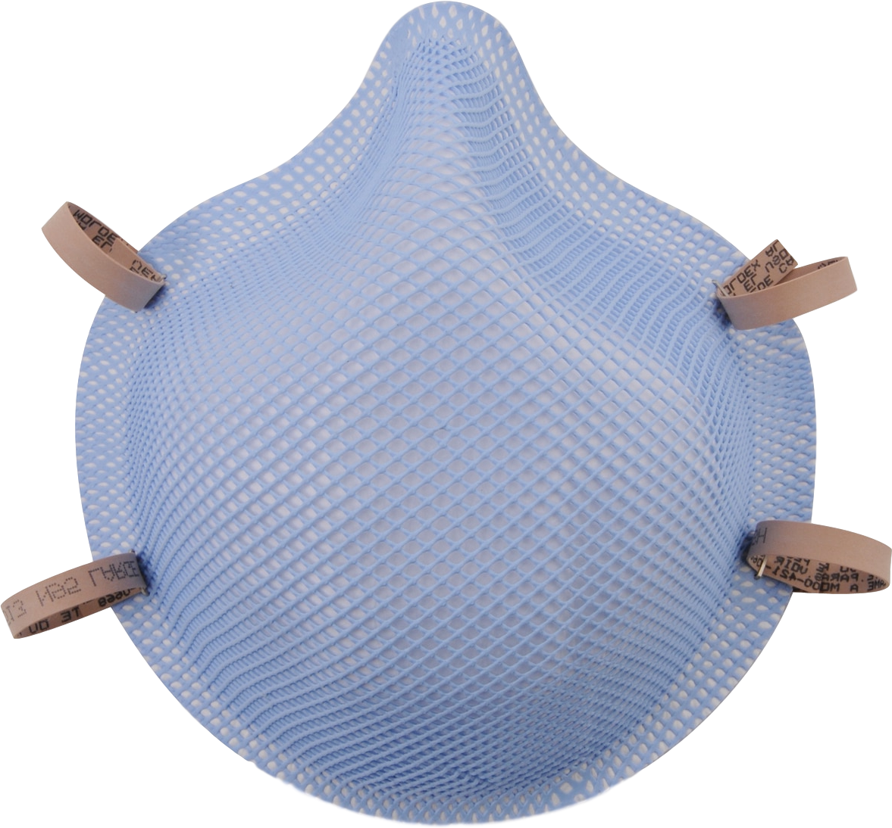
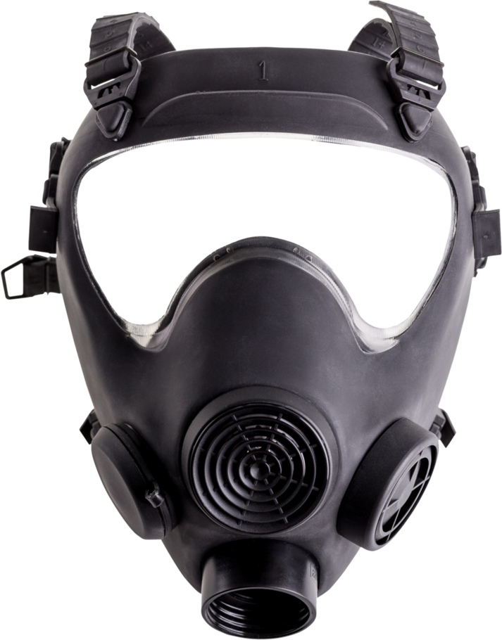

Loading Model

- 
- 
Fail to start camera, please allow permision to access camera.
If you are browsing through social media built in browsers, you would need to open the page in Sarafi (iPhone)/ Chrome (Android)
If you are browsing through social media built in browsers, you would need to open the page in Sarafi (iPhone)/ Chrome (Android)